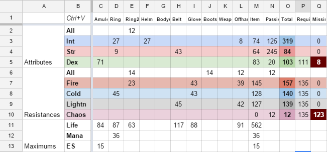
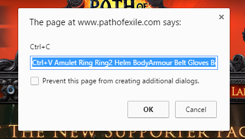

PoE equipment planner
A tool to simplify planning the equipment needed to reach resistance caps or attribute requirements.
PoE equipment planner spreadsheet


Usage:
- Bookmark the above "Fetch PoE items" link (click and drag it to the browser bookmarks bar, for example)
- Go to www.pathofexile.com and click on the bookmark (need to be logged in)
- It will show a prompt like in the screenshot, press Ctrl+C
- Go to the equipment planner spreadsheet and press File—Make a copy… or File—Download as (if you haven't already) to be able to edit it (or go to your copy if you've already done it)
- Select the upper left cell that says "Ctrl+V" and press Ctrl+V
- Fill out the attributes and resistances from passives (PoE passive skill tree planner is a great tool to find out the exact values for your build, just import your skill tree into it)
- Tweak the requirements as necessary
How it works
The bookmarklet contains a small script that fetches the items for the current character and formats them for pasting into the equipment planner spreadsheet.
See the bookmarklet source. You can build the bookmarklet from the source yourself by running ./build.sh
Project source (GitHub)